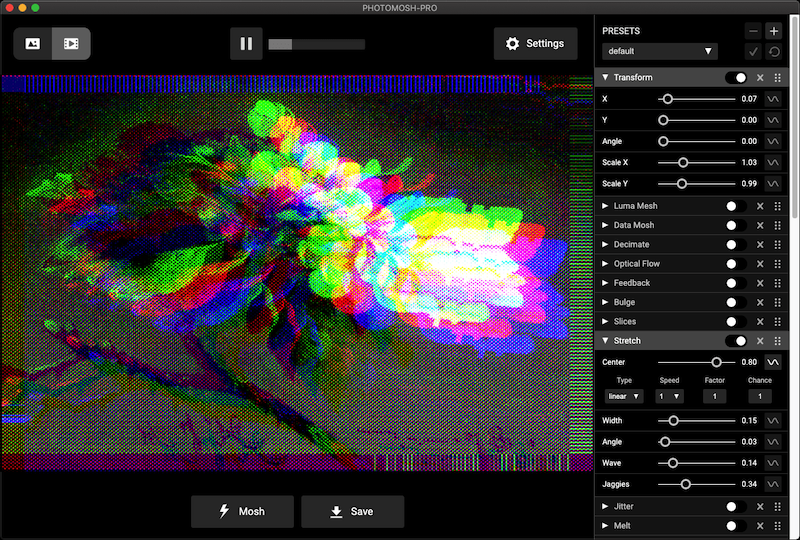
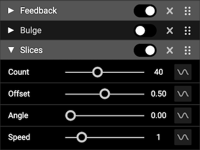
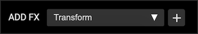
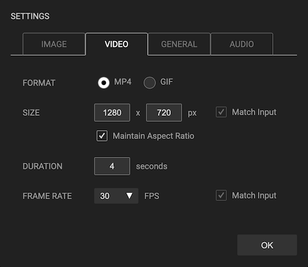
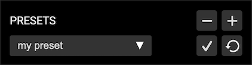
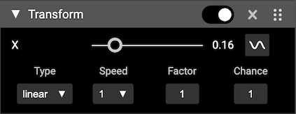
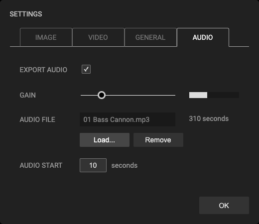

PhotoMosh-Pro - Help
Get Help and Support for PhotoMosh-Pro here.
PhotoMosh-Pro is a fully featured desktop version of
PhotoMosh, including new effects, improved UI, high-res video export,
modulators, audio-reactive effects and more.
Requirements
-
PhotoMosh-Pro requires Windows (7 or later, 64 bit) or
macOS (10.10. or later). PhotoMosh-Pro is Apple M1 Silicon compatible.
- Export render size is limited to 4096 x 4096 pixels or smaller.
- Render times are dependent on GPU speed, export size, duration and frame rate.
Installation
- Upon purchase you will be sent an email with a link to download your copy of PhotoMosh-Pro.
-
To install, unzip the downloaded zip file then:
- Windows: Double-click the 'PhotoMosh-Pro Setup.exe' file to run the installer.
-
macOS: Double-click the 'PhotoMosh-Pro.dmg' file, then drag the PhotoMosh-Pro app icon to
your Applications folder.
-
The first time you run Photomosh-Pro you will be asked to enter your license key. Your license key can be found
in the purchase email that you received on purchase. Internet connection is required for one-time registration.
- PhotoMosh-Pro may be installed on up to 3 devices for each license.
How To Use

- Choose to load a file or use the WebCam. Supported input file types are: MP4, MOV, WEBM, GIF, PNG & JPG.
- Load a new file at any time by dragging it onto the app.
-
Click 'Mosh' button to randomize FX, or use the control panel at right to toggle FX and modify parameters.
-
Click 'Save' button to record and save media output. Output media is saved to the folder selected in Settings ->
General -> Save To. By default this is the 'Desktop' folder.
-
Select output mode with top-left Output Mode button. Choose between image output mode (JPG/PNG) or video output
mode (MP4/GIF).
- For video input, use the video controls at top-center to play / pause and skip the video.
FX

The FX control panel is where you dial in your effects (FX). Effects are applied from top to bottom, drag effects
to chnage the order.
- Toggle FX with the circular toggle button. Expand parameter panel with the arrow.
- Remove effects with the X button on each effect header.
- FX can be dragged with the 6 dots icon at right to change the order that effects are applied.
- Use modulator / sine wave button to right of effect parameters to enable modulators.
- Use Top Menu -> FX -> 'Remove All FX' to remove all FX in the list.
-
Add new FX by using the 'Add FX' controls at bottom of the FX list. This allows you to stack multiple versions
of the same effect.
-
The 2 mask effects ('Mask Draw' and 'Mask Blocks') only mask out the effect layer directly above. To mask
multiple layers, create multiple mask FX. Use the 'Show Mask' checkbox to view the current mask. 'Mask Draw'
also allows you to load an external image to use as a mask.

Settings

The settings panel allows you to specify output media settings, general settings and audio settings.
- Image Settings - Specify image format (JPG/PNG) and size.
-
Video Settings - Specify video format (MP4/GIF), size, duration and frame rate. For video
output, we recommend using MP4 over GIF as it will give much smaller file sizes. If export duration is longer
than input duration, video input will be looped. If export duration is shorter than input duration, export video
will be trimmed from the start.
-
General Settings - Specify Save destination folder, webcam selection, and scene background
color and opacity. Background color is visible when using transparent inputs (transparent GIF/ PNG).
-
Audio Settings - Specify whether to save input audio track to output video. Use volume meter
and gain for fine tuning input audio for use with audio modulators.
Presets

Presets allow you to save and load favorite FX combinations.
-
Plus button - create a new preset. Enter preset name to create a new preset. Only enabled FX are saved to the
preset.
- Minus button - delete selected preset.
- Check button - update selected preset with current FX settings.
- Revert button - revert selected preset to last saved settings.
-
Top Menu -> Presets -> Open Presets Folder. Open presets save folder in Finder/Explorer. This allows you to
copy, export and import presets. Copy a preset file into the Preset Folder to import a preset.
Modulators

Modulators allow you to modify FX parameters over time. This is a great way to get more variety into your video
loops. Modulators work within the loop time. The loop time is around 4 seconds, based on the export duration.
Click the modulator / sine wave button to enable modulator and open the modulator drawer. Modulators are disabled
for image output mode.
-
Type - Can be:
- Linear - linearly changing value over loop time.
-
Sine - smooth change with a sine wave shape. Good for looping back to the original value.
- Noise - smoothly varying randomized value. Noise will loop within loop time.
- Rand - discrete random variations, more jumpy than noise.
-
Audio - use the audio volume of the input video or webcam to modulate parameters. Great way
to generate audio-reactive videos.
- Speed - Speed of modulation within loop time.
-
Factor - Used to multiply the output value. Used to increase or decrease final output value.
Drag vertically to change numeric value.
-
Chance - Chance that parameter value will randomly drop out to zero over loop time. Good for
hiding effects randomly over time. Drag vertically to change numeric value.
External Audio Files

PhotoMosh-Pro allows you to load an external audio file (MP3 or WAV) via the Audio Settings panel. This will be
merged into the output video and be used by the audio modulators.
- Loaded audio will override the input video audio.
- Use the 'Audio Start' time in combination with video export duration to create an audio loop.
- Use the 'Gain' slider to modify how input volume affects the audio modulators.
FAQ / Troubleshooting
Check here for help on common issues.
- Make sure that you are using the latest version of PhotoMosh-Pro
-
The main factor for PhotoMosh-Pro performance and render time is the export pixel size. PhotoMosh-Pro can export
at up to 4096 x 4096 px although render times and preview frame rate may be slow depending on device GPU. For
best performance we recommend exporting videos at HD resolution (1280 x 720 px) or smaller. You can also work at
smaller sizes then increase the size for final export.
-
If video exports are failing, check that you have enough free space on your hard drive. If the hard drive is
almost full this can cause export to fail.
-
For large export dimensions or duration, we recommend exporting as MP4 rather than GIF. The GIF codec produces
very large files and has a limited color pallette.
-
Alpha channel (transparency) is only supported for PNG and GIF output. MP4 and JPG do not support alpha
channels. GIF alpha channels are 1-bit.
-
If your output image is showing lighter than the preview image, it is probably related to image transparency.
PNG and GIF exports can have a transparent background which will make them appear lighter than in the preview.
To fix this set the 'Back Opacity' to 1. (Settings -> General -> Back Opacity).
-
To record or stream live moshing we recommend using OBS. OBS is free
software that handles streaming and recording video. Use the Pop-Out preview (Preview -> Pop Out Preview) to
make it easier to size the window.
Version History
View Version History.
Terms of Use
View Terms of Use.
Email Support
PhotoMosh-Pro customers are eligible for support via email for up to 2 years after initial purchase. For email
support, please email us with a detailed description of the issue and your purchase email address.
Email Support